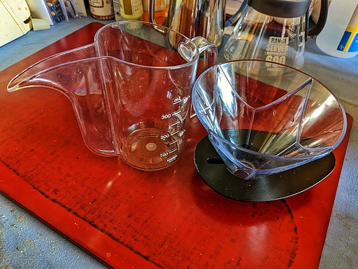
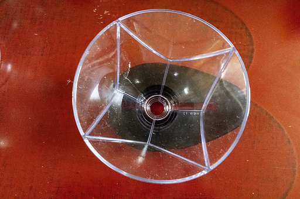

HARIO ドリッパー MUGEN と V60 ドリップケトル・エアーを導入すると、簡単に美味しいコーヒーがドリップできると聞き及んんだだめ実際に試してみた。実際に試してみたところ、V60 ドリップケトル・エアーは非常に扱いにくく、MUGEN は簡単に電動式コーヒーメーカと同じコーヒー液が得られて非常に便利だが、コーヒー液を自分好みの味わいにしようと思った途端に扱いが難しくなることがわかった。
HARIO ドリッパー MUGEN と V60 ドリップケトル・エアーの実物が下の写真になる。

最初に V60 ドリップケトル・エアーを実際に使った所感を述べる。
結論から言うと非常に使いにくい。
透明で非常に軽く、湯を落とす際にお湯が見やすく、湯の落とし方をコントロールしやすいという触れ込みだった。しかしお湯を入れれば透明のプラスチックは曇る。触れ込みにあったようにお湯を見やすいなんてことはまったくない。更にはドリップポットが樹脂製で非常に軽く、あまりの軽さに持っていてポットが安定しない。つまりお湯を一定のスピード、量で落とすのが非常に難しい。金属製の普通のドリップポットに慣れていた場合、このポットをコントロールするにはかなりの熟練を要する。
つまり簡単に扱えるなんて代物ではない。
次にドリッパー MUGEN について所感を述べる。
MUGEN の使い方は普通のペーパードリッパーと比べて使い方が特殊で、お湯を１度に投入したらあとは放置すれば美味しいコーヒーが自動的にはいるという触れ込みだ。

MUGEN の実物を手にしてわかったのだけど、これをどうやって実現しているのかというと、普通ペーパードリッパーにはリブと呼ばれる線状の突起がつけられている。このリブによりドリッパーにペーパーが密着する程度をコントロールし、それによりお湯や抽出液の流量をコントロールする仕組みになっている。
MUGEN の場合、上の写真に映っている筋は他の普通のドリッパーようなリブではなく溝である。この溝によりコーヒー液の流れる量を少量化し、同じ HARITA の V60 などと違って蒸らしも不要でお湯１投で充分な濃度のコーヒー液を得る仕組みになっている。
それで実際に説明書通りにコーヒーを作ってみたところ、電動式コーヒーメーカーと同じレベルのコーヒーを淹れることができた。ドリッパーにつきっきりになる必要がまったくないので、なかなかよくできたドリッパーだと言える。
ただこれで満足できるならよいがコーヒーを自分好みの味わいにしようとした途端、MUGEN は非常に扱いが難しいドリッパーになる。
なにせお湯の流量を一切コントロールできないので、コーヒーの味わいを変えようと思うと、豆の挽き方、ロースト、湯温でコントロールするしかない。もっともコーヒーの味わいに影響を及ぼすお湯の流量をコントロールできないのだ。
なので MUGEN で自分好みの味わいのコーヒーを淹れようとすると、かなりの研究が必要になってくる。しかもそれまで V60 やその他のドリッパーで身につけたノウハウが一切役に立たないので大変だ。
しかしコントロールの難しい V60 ドリップケトルはともかく、MUGEN は朝の忙しいときにそこそこ美味しい少量のコーヒーを淹れたいと思ったときには非常に便利だ。MUGEN はさほど高価でもないし、朝の忙しいときは MUGEN で、コーヒーじっくり味わう時間があるときは他のドリッパーで、と使い分けるのが賢いのではないだろうか。少なくとも多めに作らないとあまり美味しくならない電気式コーヒードリッパーよりいい選択肢じゃないかとも思う。